데이터는 같아도 정리 방식이 속도를 정해요
이 영상은 코드를 한 줄도 쓰지 않아요. 영화관 좌석, 보물찾기, 접시 더미 같은 일상 장면을 애니메이션으로 보여 주면서 자료구조와 알고리즘의 '속에서 무슨 일이 일어나는지'를 설명해요. 강사는 개념을 이해하면 C++, 자바, 파이썬, 자바스크립트 어느 언어로 옮기든 시간문제라고 말해요.
출발점은 우리가 이미 자료구조를 쓰고 있다는 얘기예요. 장보기 목록에서 가장 비싼 물건을 찾고, 연락처에 두 번 저장된 친구 번호를 발견하고, 할 일 목록 맨 위에 급한 일을 끼워 넣는 일이 다 그래요. 어려운 건 이름뿐이에요.
책상 위 서류 더미와 캐비닛
핵심 비유는 책상이에요. 5년 치 고지서와 은행 내역이 산처럼 쌓여 있을 때 '3년 전 3월 전기 요금 고지서'를 찾으려면 몇 시간이 걸려요. 같은 종이를 연도별 서랍, 월별 폴더로 나눈 캐비닛에 넣어 두면 몇 초면 꺼내요. 아래 화면 왼쪽이 흩어진 종이, 오른쪽이 서랍 세 칸짜리 캐비닛이에요. 노란 칸 하나가 바로 찾아낸 서류예요.
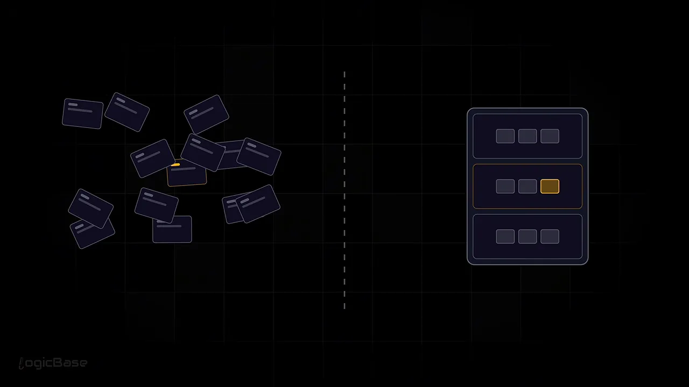
컴퓨터도 똑같아요. 수백만, 수십억 개 데이터를 아무렇게나 흩어 두면 찾느라 앱이 느려지거나 멈춰요. 자료구조는 나중에 찾기, 추가, 삭제를 빠르고 싸게 하려고 메모리 안에 데이터를 정리해 두는 방법이에요. 이때 작업 하나에 드는 시간과 메모리를 따지는 게 효율이에요.
If you organize the same data in different ways, the speed of your program will also be completely different.
같은 데이터라도 정리하는 방식이 다르면 프로그램 속도도 완전히 달라져요.
— 영상 06:40
강사는 이 한 줄이 앞으로 모든 주제의 열쇠라고 해요. 이후 등장하는 자료구조는 모두 '앞의 방식이 어디서 불편했는지'에서 출발해요.
배열과 연결 리스트
배열: 번호가 붙은 영화관 좌석
영화관 표에 'A열 5번'이라고 적혀 있으면, 1번 관객에게 5번이 어디냐고 묻지 않고 바로 걸어가요. 좌석이 빈틈없이 한 줄로 붙어 있고 번호가 차례로 매겨져 있으니까요. 배열도 메모리에 칸을 붙여서 잡고 칸마다 번호를 매겨요. 이 번호가 인덱스예요. 아래 화면에서 칸 밑의 숫자가 1이 아니라 0부터 9까지 매겨진 걸 보세요. 컴퓨터는 번호를 0부터 세요.
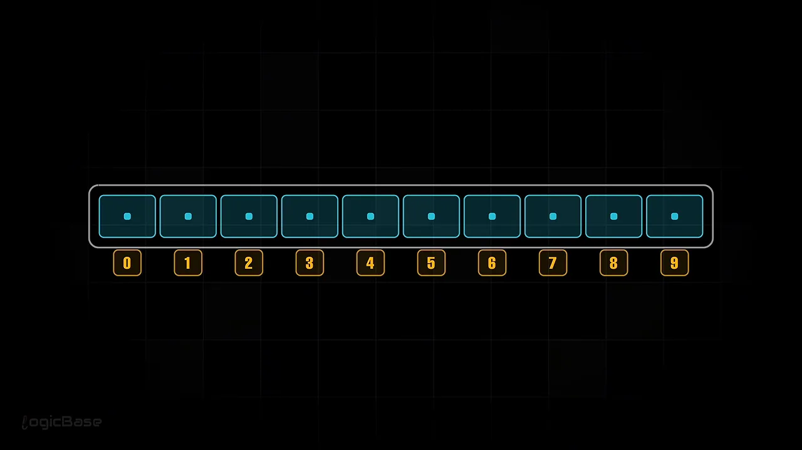
배열의 가장 큰 힘은 바로 접근하기예요. 1,000만 개 중 500만 번째를 달라고 하면 하나도 뒤지지 않고 그 자리로 가요. 데이터가 아무리 많아도 위치만 알면 걸리는 시간이 같아요. 영상은 이걸 상수 시간이라고 불러요.
약점은 중간에 끼워 넣기예요. 1~10번에 관객이 꽉 찬 상태에서 3번과 4번 사이에 VIP(Very Important Person) 좌석을 새로 놓으려면 4번 관객이 5번으로, 5번이 6번으로, 끝까지 모두 한 칸씩 옮겨야 해요. 아래 화면에서 3번과 4번 사이에 점선으로 그려진 주황 좌석이 새로 끼울 자리예요.
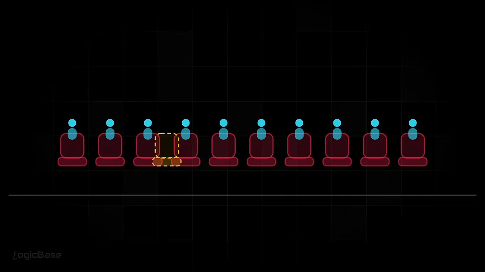
연결 리스트: 쪽지를 따라가는 보물찾기
연결 리스트는 '데이터를 꼭 붙여 둘 필요가 없다'는 생각에서 나왔어요. 보물찾기를 떠올리면 돼요. 손에 든 첫 쪽지에는 '다음 쪽지는 망고나무 밑에 있다'만 적혀 있고, 거기서 찾은 쪽지가 다시 다음 위치를 알려 줘요. 연결 리스트에서는 이 쪽지 하나가 노드예요. 아래 화면처럼 노드는 왼쪽 'DATA' 칸에 실제 값(42)을, 오른쪽 'NEXT' 칸에 다음 노드가 있는 주소를 담아요.
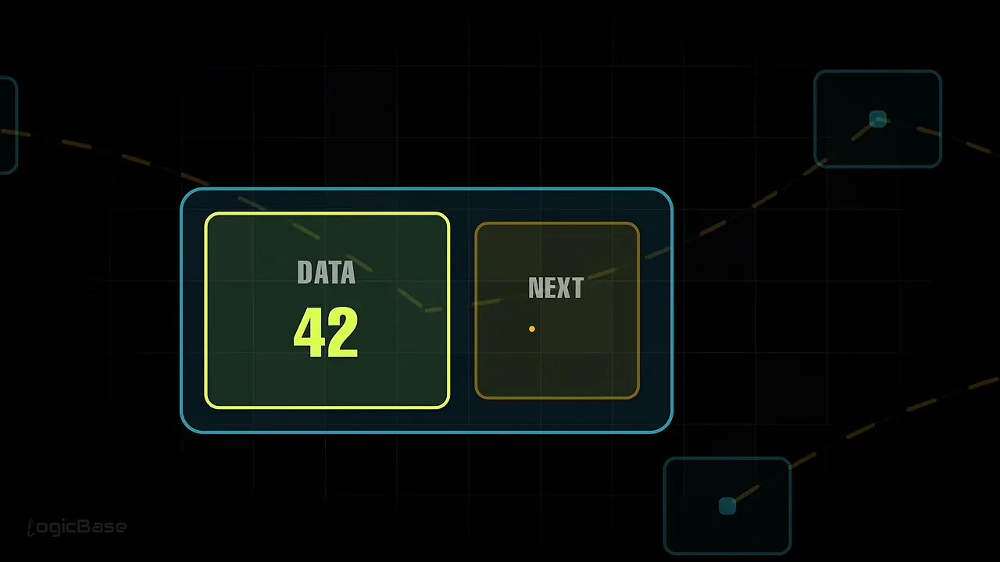
그래서 중간 삽입이 쉬워요. 2번과 3번 쪽지 사이에 새 쪽지를 넣고 싶으면 망고나무도 우물도 옮길 필요가 없어요. 2번 쪽지에 적힌 주소를 지우고 새 쪽지 주소를 적은 뒤, 새 쪽지에 3번 주소를 적으면 끝이에요. 아래 화면의 파란 NEW 카드가 2번과 3번 사이로 들어가는 장면이에요.
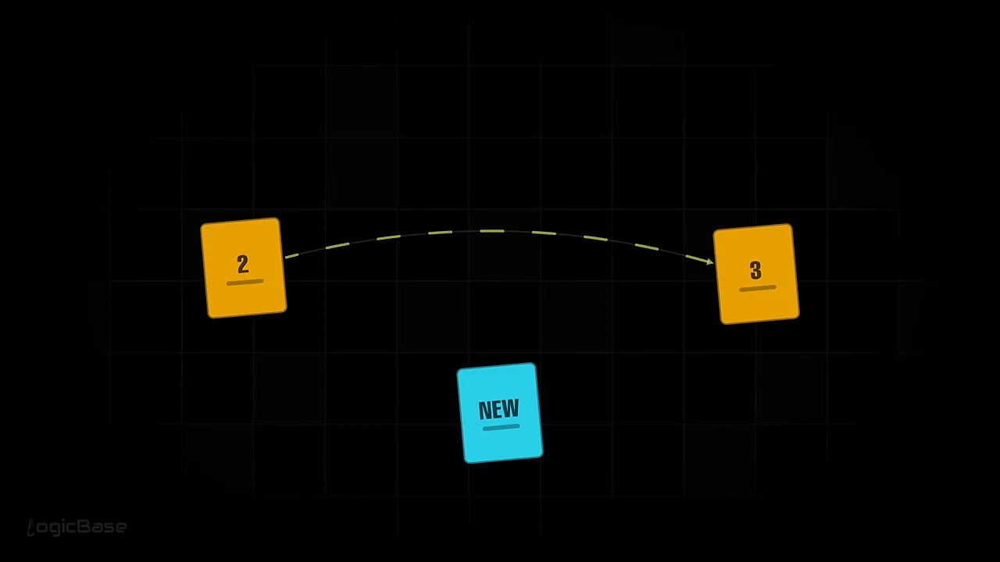
대신 잃는 것도 있어요. 다섯 번째 쪽지가 어디 있는지는 네 번째 쪽지만 알아요. 그래서 10만 번째 데이터를 보려면 첫 노드부터 99,999개를 차례로 지나가야 해요. 찾기는 느려요.
연결 리스트의 세 가지 모양
지금까지 본 건 단일 연결 리스트예요. 다음 노드 주소만 알아서 앞으로만 가는 일방통행이에요. 보물찾기 중 이전 쪽지를 다시 보고 싶으면 처음부터 다시 시작해야 해요. 이중 연결 리스트는 이 불편을 풀려고 이전 노드 주소도 함께 들고 있어요. 아래 화면의 'DOUBLY · TWO WAY'가 그 양방향 길이에요.
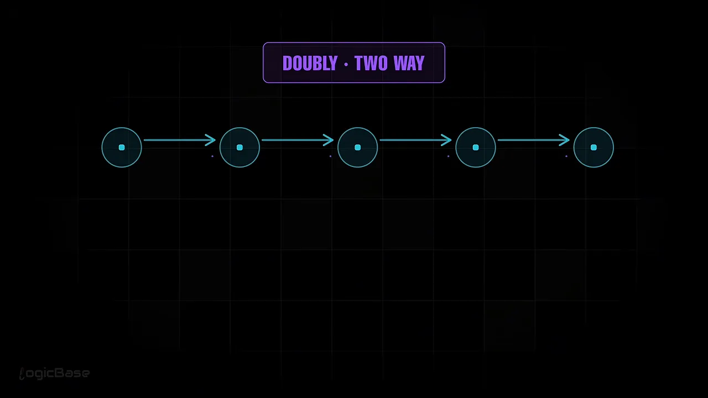
원형 연결 리스트는 마지막 노드가 첫 노드 주소를 들고 있어서 처음도 끝도 없는 바퀴가 돼요. 아래 화면처럼 음표 카드 여섯 장이 원을 이루고, 가운데 재생 버튼이 계속 돌아요. 음악 앱의 반복 재생에서 마지막 곡이 끝나면 첫 곡이 다시 나오는 게 이 구조예요.
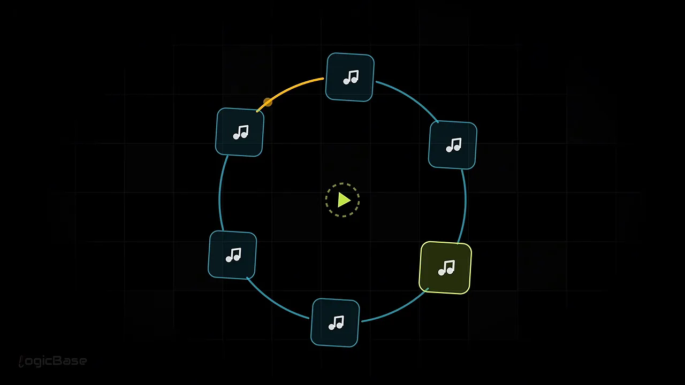
무엇을 고를까요
강사는 이 둘을 '모든 건 맞바꾸기'라는 말로 정리해요. 모든 문제에 같은 도구를 쓰면 망한다고까지 말해요.
| 배열 | 연결 리스트 | |
|---|---|---|
| 메모리 배치 | 칸이 빈틈없이 붙어 있어요 | 아무 곳에 흩어지고 주소로 이어요 |
| N번째 찾기 | 바로 가요 | 처음부터 하나씩 따라가요 |
| 중간에 넣기·빼기 | 뒤를 전부 옮겨야 해요 | 주소만 고쳐 쓰면 돼요 |
| 이럴 때 골라요 | 검색이 잦은 앱 | 중간 삽입이 잦은 앱 |
스택, 큐, 그리고 힙으로 만든 우선순위 큐
배열과 연결 리스트는 데이터를 '어디에' 두느냐의 문제였어요. 이번에는 데이터가 '어떤 순서로' 들어오고 나가느냐가 더 중요한 경우예요.
스택: 접시 더미
씻은 접시를 한 장씩 위로 쌓으면, 쓸 때는 맨 위 접시부터 꺼내요. 맨 아래 접시를 빼려 하면 더미가 무너지죠. 마지막에 들어간 것이 먼저 나오는 이 규칙이 LIFO이고, 이 규칙을 그대로 따르는 구조가 스택이에요. 맨 위에 올리는 동작이 push, 맨 위에서 빼는 동작이 pop이에요. 아래 화면에서 A, B, C, D 순서로 쌓였고 빨간 화살표가 맨 위 D를 꺼내는 쪽을 가리켜요.
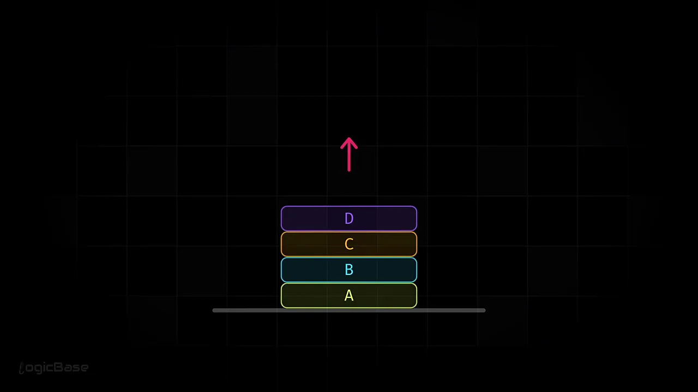
스택은 매일 쓰고 있어요. 구글에서 페이스북으로, 다시 유튜브로 링크를 타고 가면 브라우저가 페이지를 하나씩 쌓아요. 뒤로 가기를 누르면 구글이 아니라 페이스북이 먼저 나와요. 아래 화면의 노란 뒤로 가기 버튼 옆에 페이스북 창이 떠 있는 장면이 그 순간이에요. 워드나 포토샵의 Ctrl+Z 되돌리기도 마지막 작업부터 꺼내는 스택이고, 프로그램이 함수를 부를 때 쓰는 콜 스택도 같은 원리예요.
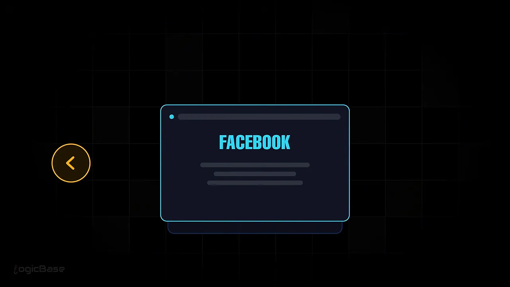
큐: 은행 창구 줄
은행에서 아침 8시부터 줄을 섰는데, 10시에 온 사람이 먼저 처리되면 난리가 나요. 그래서 먼저 온 사람이 먼저 나가는 FIFO 규칙이 필요하고, 이걸 따르는 구조가 큐예요. 줄 맨 뒤에 붙는 동작이 enqueue, 맨 앞에서 빠지는 동작이 dequeue예요. 사무실 프린터 한 대에 직원 10명이 동시에 인쇄를 보내면, 프린터는 1밀리초라도 먼저 온 문서를 앞에 두고 순서대로 인쇄 대기열을 만들어요.
배열로 큐를 단순하게 만들면 문제가 하나 생겨요. 아래 화면처럼 01~06이 차 있고 오른쪽 두 칸이 비어 있어요. 앞사람이 처리돼 빠지면 앞쪽 칸이 비는데, 뒤쪽이 꽉 차면 그 빈칸을 쓰지 못해요.
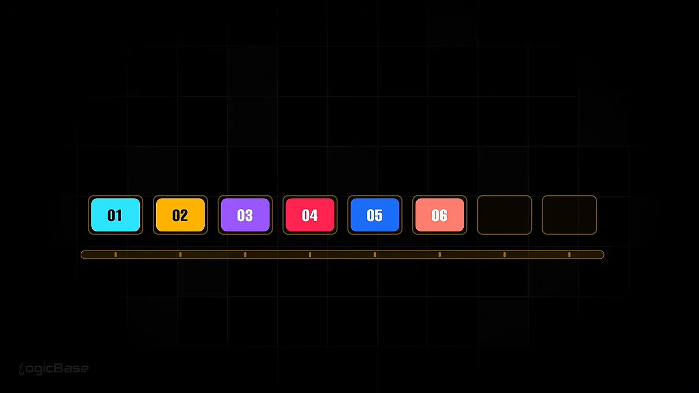
원형 큐는 줄의 끝을 처음과 이어 고리로 만들어요. 아래 화면에서 P1~P8이 원을 이루고, 노란 F가 줄의 맨 앞, 빨간 R이 맨 뒤를 가리켜요. 뒤가 차도 앞에 빈자리가 있으면 한 바퀴 돌아 거기에 넣어요. 영상은 운영체제의 프로세스 관리에 널리 쓰인다고 말해요.
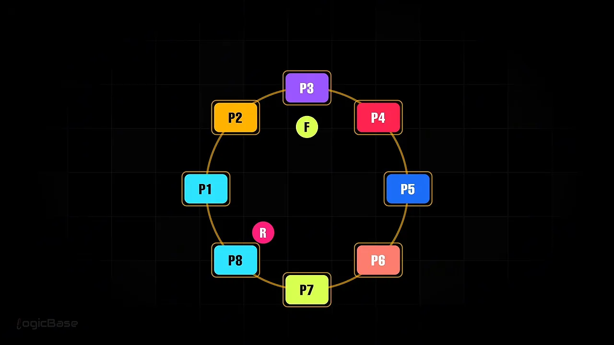
덱(double-ended queue)은 앞과 뒤 양쪽 끝에서 넣고 뺄 수 있는 줄이에요. 한쪽 끝만 쓰면 스택, 양 끝을 나눠 쓰면 큐가 되니 둘 다 흉내 낼 수 있어요.
우선순위 큐와 힙: 응급실 줄
응급실에 미열, 손가락 베임, 두통 환자가 아침부터 기다리는데 심장마비 환자가 실려 왔어요. 먼저 온 순서를 고집하면 사람이 죽어요. 그래서 넣은 순서와 상관없이 우선순위가 가장 높은 것부터 꺼내는 우선순위 큐가 있어요.
우선순위 큐가 수천 개 중 가장 중요한 것을 순식간에 맨 앞에 두는 비결은 힙이에요. 힙은 가장 중요한 값이 늘 꼭대기에 오도록, 새 데이터가 들어올 때마다 안에서 비교하고 자리를 바꾸는 피라미드예요. 아래 화면은 최대 힙이에요. 꼭대기 95가 가장 크고, 그 아래 74와 81, 맨 아래 45·63·58·37이 있어요. 시험에서 최고점자부터 상을 줄 때처럼 큰 값이 중요하면 최대 힙을 써요.
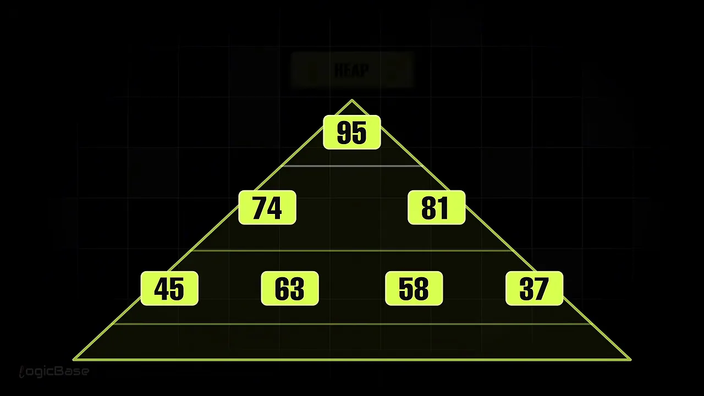
달리기처럼 가장 작은 값이 이기는 경우에는 최소 힙을 써요. 아래 화면의 MIN-HEAP 꼭대기에는 기록 중 가장 빠른 값이 올라오도록 정리돼요.
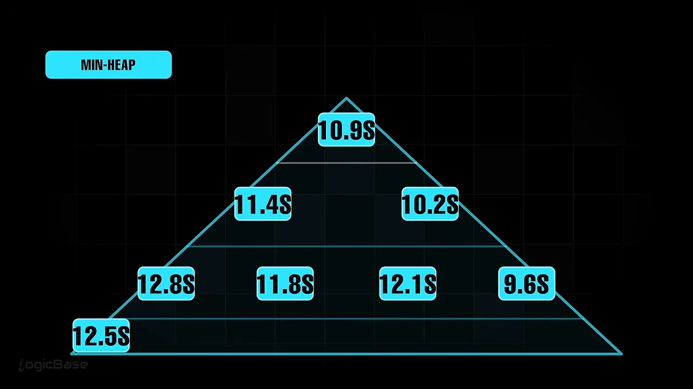
운영체제도 우선순위 큐를 써요. 음악 재생, 백그라운드 다운로드, 마우스 움직임이 동시에 돌 때 마우스 입력을 가장 높은 우선순위로 먼저 처리해요. 그래서 컴퓨터가 부드럽게 느껴져요.
해시 테이블과 세트
지금까지는 인덱스를 따라가거나(배열), 하나씩 넘어가거나(연결 리스트), 줄을 서서 기다렸어요(큐). 그런데 번호를 모르는 데이터는 어떻게 찾을까요? 사물함 1,000개 중 420번을 찾으려면 처음부터 번호를 세며 걸어가야 해요. 반면 스마트폰 연락처에서 친구 '라피드'를 검색하면 스크롤 없이 바로 나와요.
아래 화면이 그 장면이에요. 검색창에 'RAFID'를 치자 여러 이름 사이에서 Rafid 한 줄만 초록으로 표시되고, 오른쪽에 'NO SCROLLING'이 붙어 있어요.
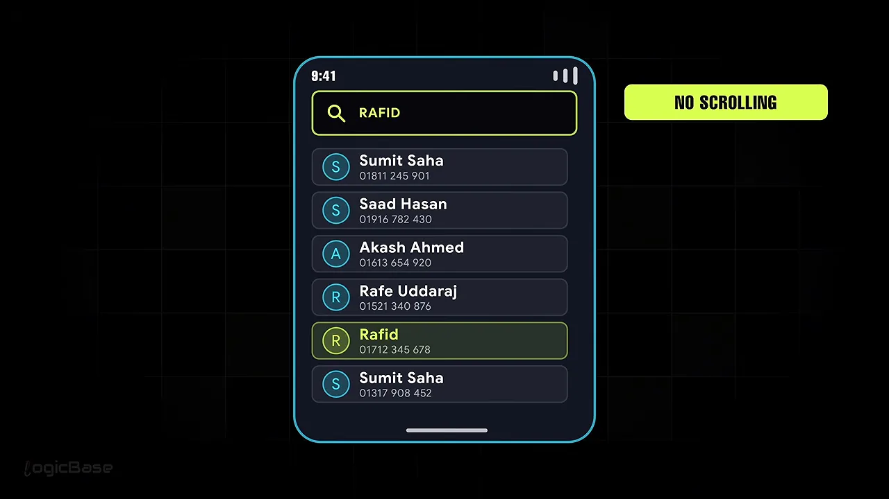
해시 함수가 서랍 번호를 알려 줘요
해시 테이블은 언어에 따라 해시맵, 딕셔너리라고도 불러요. 주문은 '찾지 말고 바로 그 자리로 가라'예요. 키(라피드)와 값(전화번호)을 열쇠와 자물쇠처럼 짝지어 저장해요.
저장할 때는 해시 함수라는 계산 기계에 키를 넣어요. 아래 화면에서 왼쪽 'RAFID' 열쇠가 가운데 'HASH FUNCTION' 상자('KEY → INDEX')를 지나면, 오른쪽 74·75·76번 서랍 중 75번이 노랗게 켜지고 그 안에 라피드의 번호가 들어가요. 다시 찾을 때도 같은 키를 같은 기계에 넣으면 또 75번이 나오니, 그 서랍만 열면 돼요.
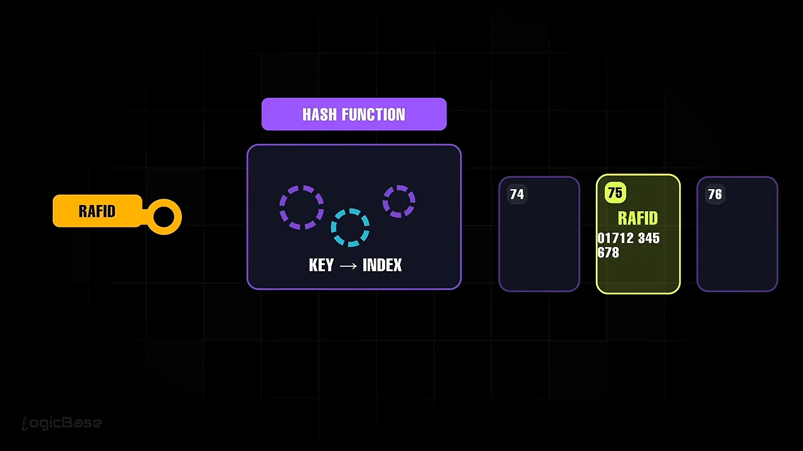
강사는 연락처가 10개든 1,000개든 1,000만 개든 찾는 시간이 거의 같고 0에 가깝다고 말해요. 속도로는 자료구조 세계의 왕이라고 부를 정도예요.
세트: 키만 남긴 해시 테이블
세트는 해시 테이블 가족이에요. VIP 클럽 명단처럼 같은 이름을 두 번 적을 수 없어요. 아래 화면에서 'SUMIT', 'SAAD', 'AKASH'가 이미 명단에 있는데, 'SAAD'가 다시 들어오려 하자 빨간 'DUPLICATE BLOCKED'가 떠요.
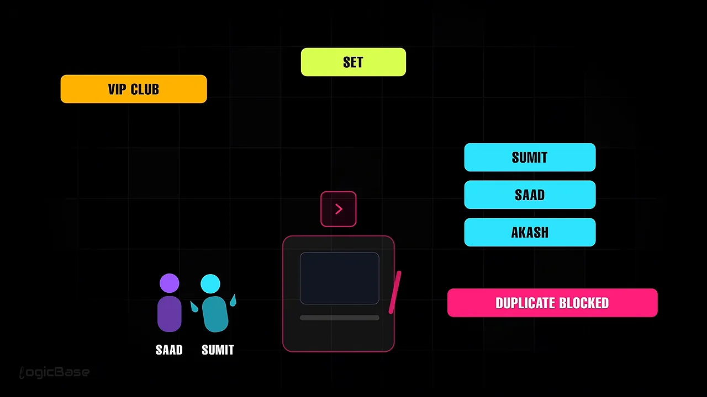
세트는 속을 들여다보면 값 없이 키만 들고 있는 해시 테이블이에요. 해시 테이블에서는 같은 키가 두 번 있을 수 없으니 중복이 저절로 빠져요. 데이터베이스의 중복 이메일을 지우거나, 아이디가 이미 있는지 순식간에 확인할 때 해시 테이블과 세트가 가장 좋은 도구라고 정리해요.
트리, 이진 탐색 트리, 트라이
여기까지 본 구조는 모두 기차 칸처럼 데이터가 한 줄로 늘어선 선형 구조였어요. 그런데 현실의 관계는 위아래로 갈라지는 경우가 많아요. 가족이 그래요. 할아버지 아래 아버지와 삼촌이, 아버지 아래 나와 여동생이, 삼촌 아래 사촌이 있어요. 이걸 한 줄로 세우면 누가 누구 다음인지 엉망이 돼요. 아래 화면이 그 가계도예요. 맨 위 'GRANDFATHER'에서 'FATHER'와 'UNCLE'로, 'FATHER'에서 'YOU'로 가지가 내려가요.
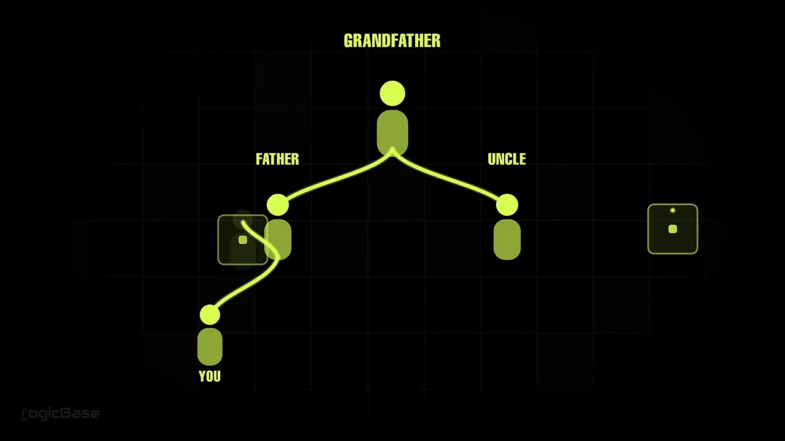
트리의 부품: 루트, 부모, 자식, 리프
컴퓨터의 트리는 뒤집힌 나무예요. 뿌리가 맨 위에 있고 가지가 아래로 뻗어요. 아래 화면에서 맨 위 'ROOT'는 부모가 없는 첫 데이터예요. 가지가 나오는 보라색 'PARENT' 아래 달린 것이 자식이고, 더 아래로 가지가 없는 끝의 잎('LEAF')이 리프예요.
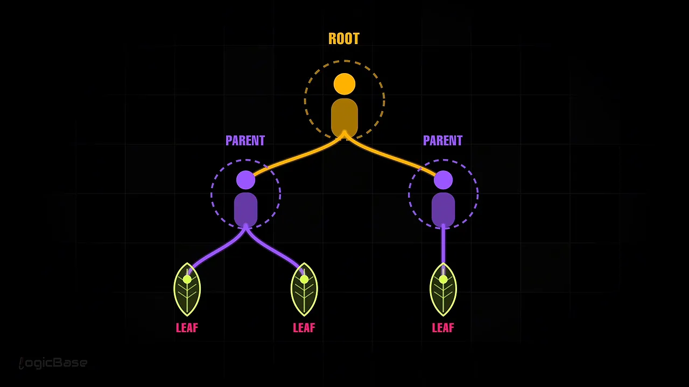
컴퓨터의 파일 탐색기가 거대한 트리예요. C 드라이브가 루트이고, 그 안에 Program Files, Users, Windows 폴더가 자식으로, Users 안에 사진·음악·문서 폴더가 다시 자식으로 들어 있어요.
이진 탐색 트리: 숫자 맞히기 게임
부모 하나에 자식이 최대 둘(왼쪽, 오른쪽)인 트리가 이진 트리예요. 여기에 '왼쪽 자식은 부모보다 작고, 오른쪽 자식은 부모보다 크다'는 규칙 하나를 더하면 이진 탐색 트리(BST(Binary Search Tree))가 돼요.
강사는 1~100 숫자 맞히기로 설명해요. 1, 2, 3 순서로 부르면 100번까지 갈 수 있어요. 50부터 부르고 '더 작다'는 답을 들으면 51~100이 한 번에 사라져요. 다음에 25를 불러 '더 크다'를 들으면 1~24가 사라져요. 매번 남은 범위의 가운데를 부르면 범위가 절반씩 줄어요. 아래 화면처럼 1,000만 개 데이터에서도 약 24번이면 맞혀요.
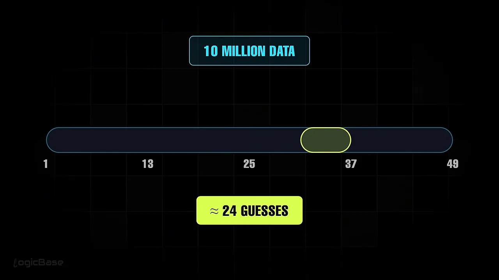
BST는 이 게임 규칙대로 데이터를 메모리에 놓아요. 아래 트리는 루트 50, 그 왼쪽에 30, 오른쪽에 70이 있고, 30 아래 20과 40, 70 아래 60과 80이 있어요. 20을 찾으면 50보다 작으니 왼쪽으로 가고, 오른쪽 70 쪽 데이터는 쳐다보지도 않아요. 찾기뿐 아니라 넣기와 지우기도 같은 길을 따라가니 빨라요.
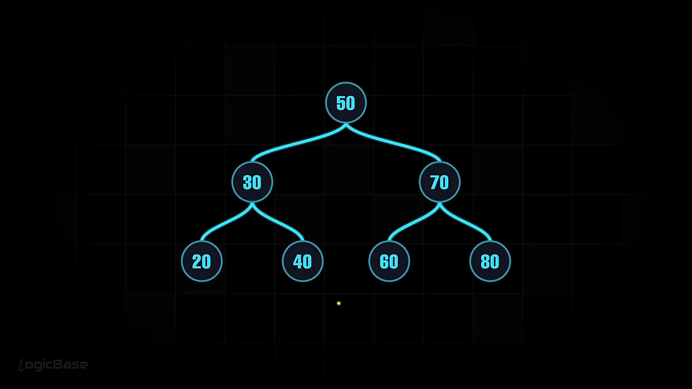
한쪽으로 기운 트리와 균형 트리
숨은 위험도 있어요. 1, 2, 3, 4, 5처럼 이미 정렬된 순서로 넣으면, 새 수가 늘 앞의 수보다 커서 계속 오른쪽에만 붙어요. 아래 화면처럼 1에서 5까지 오른쪽 아래로만 내려가는 한 줄이 돼요. 화면 아래 'SLOW SEARCH'가 붙은 이유는, 이제 5를 찾으려면 1, 2, 3, 4를 다 지나야 하기 때문이에요. 트리가 연결 리스트로 돌아간 셈이에요.
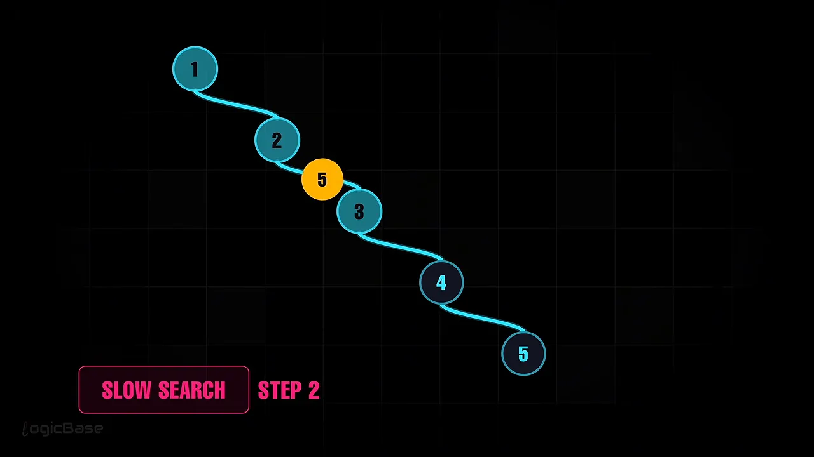
이를 막으려고 균형 트리가 나왔어요. 대표가 AVL(Adelson-Velsky and Landis) 트리와 레드-블랙 트리예요. AVL이라는 이름은 만든 사람들의 이름에서 왔어요. 새 데이터가 들어와 한쪽이 무겁거나 높아지면 가지를 비틀어 다시 고르게 펴요. 아래 화면은 같은 1~5를 균형 있게 다시 세운 모습이에요. 3이 루트가 되고 2와 4가 양옆에, 1과 5가 그 아래 있어요.
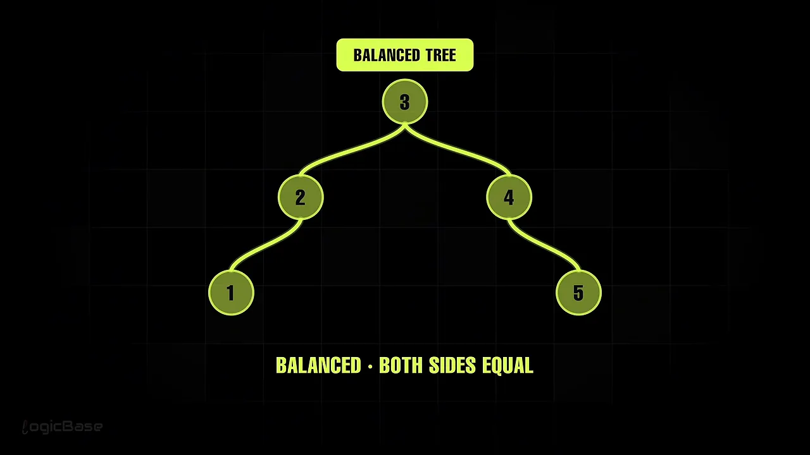
트라이: 자동 완성의 엔진
트라이는 발음이 tree와 같지만 철자가 다른 트리예요. 이름은 retrieval(꺼내 오기)에서 왔고, try처럼 읽기도 해요. 구글 검색창에 'how to'를 다 치기도 전에 추천 검색어가 뜨는 자동 완성 뒤에서 일해요.
일반 트리는 노드 하나에 단어 하나를 넣어요. 트라이는 노드 하나에 글자 하나만 넣어요. 아래 화면 왼쪽이 'CAT' 통째('1 NODE · 1 WORD'), 오른쪽이 C-A-T 세 노드('1 NODE · 1 LETTER')예요.
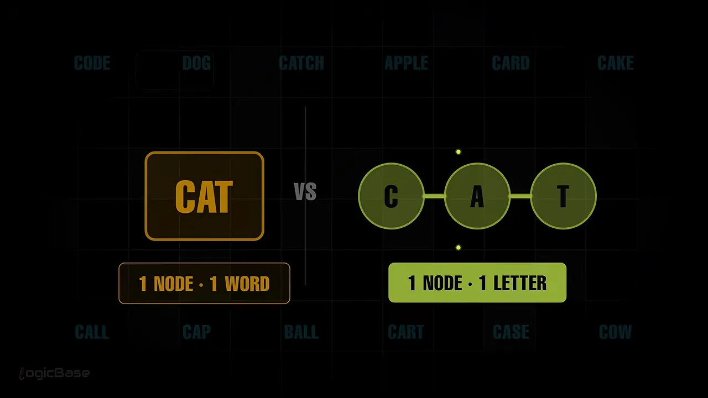
car와 cat을 넣으면 두 단어가 C → A 길을 한 번만 만들어 함께 쓰고, A에서 R과 T로 갈라져요. 아래 화면처럼 검색창에 'ca'만 쳐도 루트에서 C, A로 내려간 뒤 그 아래 R과 T 두 가지를 보고 car와 cat을 제안해요. C로 시작하는 단어가 10만 개여도 C 가지는 하나라서 메모리도 아껴요. 영상은 단어 검색, 맞춤법 검사, 검색 엔진 자동 완성에 쓴다고 정리해요.
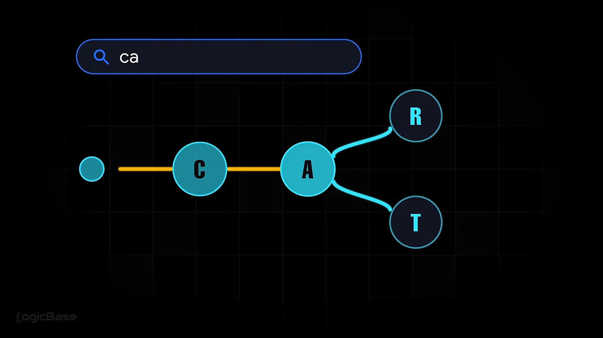
그래프: 사방으로 얽힌 관계망
선형 구조는 한 줄, 트리는 위에서 아래로 갈라지는 계층이었어요. 그런데 페이스북 친구 관계는 어때요? 너는 내 친구, 네 친구는 라피드, 라피드의 친구는 탄비르예요. 누가 부모이고 누가 자식인지 정할 수 없어요. 아래 화면처럼 사람들이 거미줄처럼 사방으로 이어져 있어요.
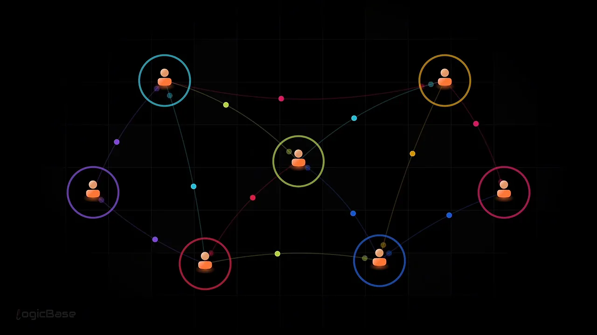
강사는 그래프를 자료구조 중 가장 자유로운 구조라고 해요. 규칙이 거의 없어서 누구든 원하는 만큼 연결을 만들 수 있어요. 알아야 할 부품은 둘이에요. 정점은 관계망의 점 하나하나(페이스북의 프로필, 지도의 도시)이고, 간선은 두 정점을 잇는 연결(친구 관계, 두 도시 사이 도로)이에요.
간선의 성격으로 나누기
페이스북 친구는 요청을 수락하면 양쪽 모두 친구가 돼요. 아래 화면에서 페이스북 아이콘과 사람 아이콘 사이에 'ACCEPTED'가 뜬 순간이에요. 이렇게 방향이 없는 연결로 된 그래프가 무방향 그래프예요.
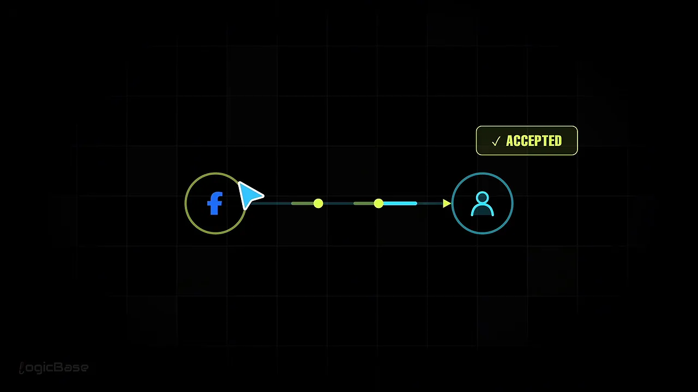
트위터나 인스타그램은 달라요. 내가 유명인을 팔로우해도 그 사람이 나를 팔로우하지는 않아요. 소식은 그쪽에서 내 쪽으로만 흘러요. 이렇게 한쪽 방향 화살표로 된 그래프가 방향 그래프예요.
도로에는 거리와 시간이 붙어요. 아래 화면에서 다카에서 실렛은 240km에 6시간, 치타공은 250km에 5시간이에요. 거리는 실렛이 짧은데 시간은 치타공이 짧아요. 이처럼 간선마다 거리·시간·비용 같은 값(가중치)이 붙은 그래프가 가중 그래프예요. 친구 관계처럼 아무 값이 없는 연결이면 비가중 그래프예요.
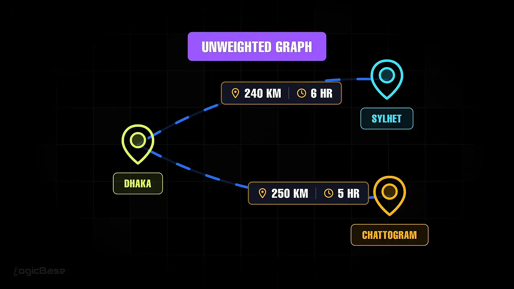
| 구분 | 연결의 성격 | 영상의 예 |
|---|---|---|
| 무방향 그래프 | 양쪽으로 오가요 | 페이스북 친구 |
| 방향 그래프 | 한쪽으로만 흘러요 | 트위터·인스타그램 팔로우 |
| 가중 그래프 | 연결마다 거리·시간·비용이 붙어요 | 구글 지도의 도시 간 도로 |
| 비가중 그래프 | 연결에 값이 없어요 | 페이스북 친구 관계 |
트리도 사실 그래프예요
강사는 마지막에 트리가 다른 행성에서 온 게 아니라고 말해요. 그래프에 두 규칙을 걸면 트리가 돼요. 하나, 출발점으로 되돌아오는 길(사이클)이 없어야 해요. 둘, 자식마다 부모가 하나뿐이어야 해요. 이 관계를 알고 나면 배열부터 그래프까지가 같은 가족이라는 게 보여요. 아래 화면이 그 가족 그림이에요. 가운데 점 묶음에서 'ARRAY', 'LINKED LIST', 'STACK', 'QUEUE'로 가지가 뻗어 있어요.
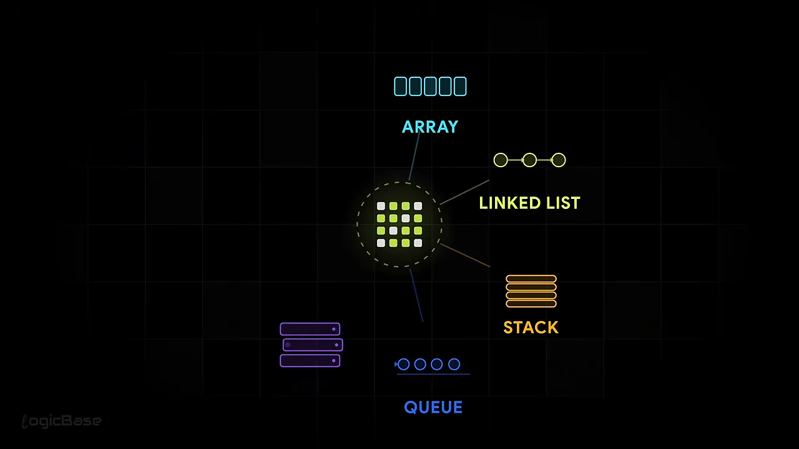
탐색과 정렬
지금까지는 데이터를 넣어 둘 집을 지었어요. 하지만 캐비닛을 사서 서류를 정리해 놓고 하루 종일 바라만 보면 무슨 소용일까요? 수십억 개 중 하나를 찾고, 뒤죽박죽인 데이터를 작은 것부터 세우고, 지도에서 가장 싼 길을 찾는 단계별 방법이 알고리즘이에요.
Data structure is the science of where and how we store things. And algorithm is the art of how we use those stored things …
자료구조는 무엇을 어디에 어떻게 넣느냐의 과학이고, 알고리즘은 넣어 둔 것을 어떻게 쓰느냐의 기술이에요.
— 영상 47:47
선형 탐색과 이진 탐색
선형 탐색은 이름이 뒤죽박죽인 100쪽짜리 학생 명부(1,000명)에서 '탄비르 아메드'를 첫 줄부터 한 줄씩 읽어 찾는 방식이에요. 찾는 이름이 마지막 쪽 마지막 줄에 있으면 1,000명을 다 읽어야 해요. 데이터가 1,000만 개면 1,000만 번 확인해요.
이진 탐색은 A부터 Z까지 정렬된 10만 단어짜리 옥스퍼드 사전을 가운데부터 펴는 방식이에요. 아래 화면에서 'monkey'를 찾으려고 펼친 곳이 'MANGO'예요. monkey의 둘째 글자 o는 mango의 a보다 뒤라서, 그 왼쪽 5만 단어는 통째로 버려요(빨간 '50,000 DISCARDED'). 남은 오른쪽 절반을 다시 가운데부터 펴서 'nose'가 나오면 이번엔 그 오른쪽을 버려요.
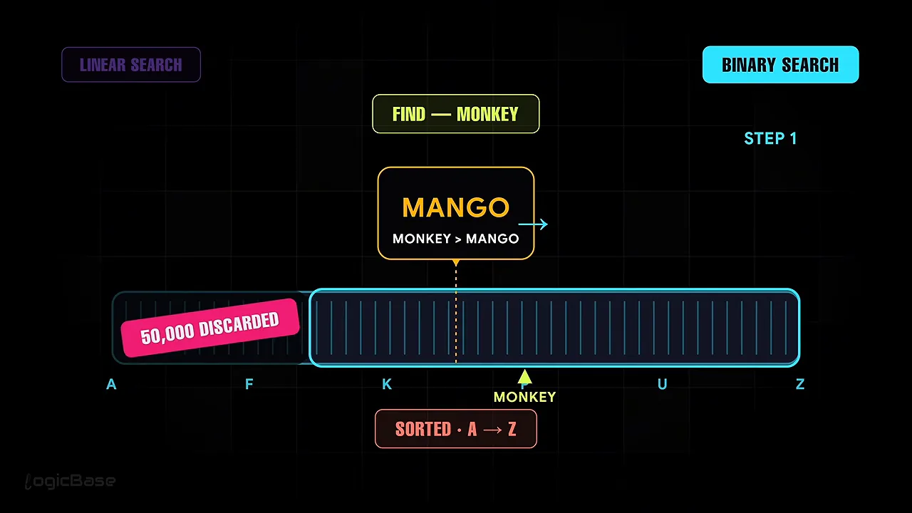
차이는 아래 화면 하나로 보여요. 같은 10만 단어 사전에서 선형 탐색은 보라색 막대 끝까지, 최대 10만 번 확인해요. 이진 탐색은 최대 17번이면 돼요. 막대로 그리면 거의 보이지 않을 만큼 짧아요.
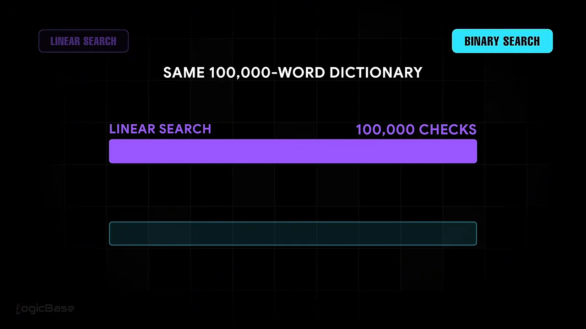
단, 조건이 있어요. 데이터가 미리 정렬돼 있어야 해요. 뒤섞여 있으면 이진 탐색은 쓸 수 없고 선형 탐색밖에 없어요. 데이터 개수를 바꿔 가며 두 방식의 최대 확인 횟수를 비교해 보세요.
선형 탐색 최대 100,000번
이진 탐색 최대 17번
이진 탐색 칸 하나가 '가운데를 펴서 절반을 버리는' 한 번이에요.
- 100,000개에 두고 보세요. 영상이 말한 '10만 단어 사전에서 최대 17번'이 그대로 나와요.
- 10,000,000개로 올려 보세요. 숫자 맞히기 화면의 '약 24번'과 같아요. 선형 탐색은 100배 늘었는데 이진 탐색은 7칸만 늘었어요.
- 100개로 내려 보세요. 1~100 숫자 맞히기에서 1, 2, 3 순서로 부르면 최대 100번, 가운데부터 부르면 7번이에요.
단순한 정렬 셋
현실의 데이터는 정렬된 채로 오지 않아요. 무질서를 질서로 바꾸는 게 정렬 알고리즘이에요.
버블 정렬은 처음부터 이웃한 두 수를 비교해서 앞이 크면 자리를 바꿔요. 아래 화면에서 'SWAP' 표시와 함께 9와 2가 자리를 바꾸는 중이에요. 이걸 반복하면 가장 큰 수가 물속 거품처럼 맨 끝으로 떠올라 자리를 잡아요. 이해하긴 쉽지만 데이터가 많으면 아주 느려요.
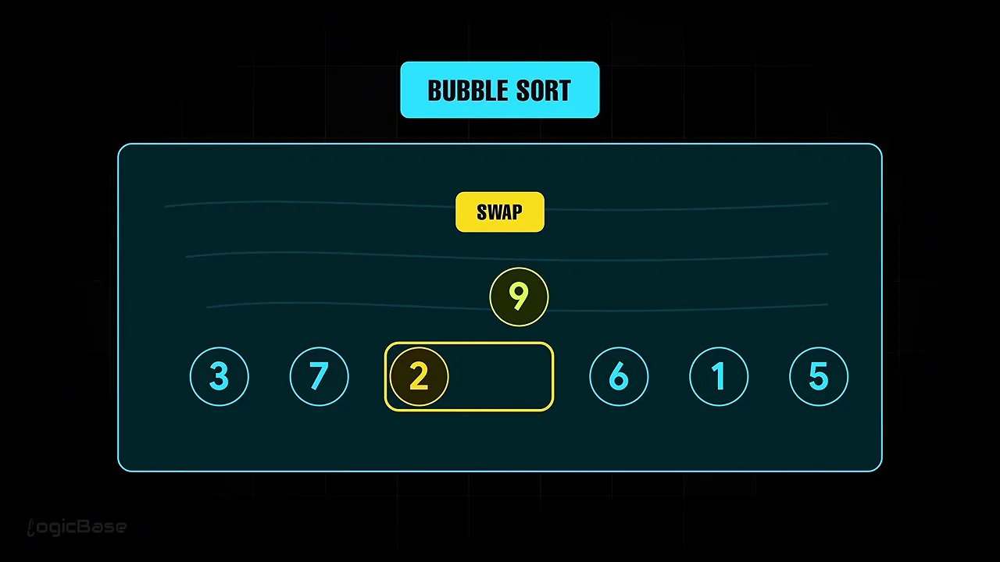
선택 정렬은 키가 제각각인 학생 30명을 줄 세우는 선생님이에요. 전체에서 가장 작은 학생을 골라 첫 자리에 세우고, 남은 29명 중 가장 작은 학생을 둘째 자리에 세워요. 아래 화면처럼 키가 다른 학생들이 서 있고 위에 'SHORTEST'를 찾는 표시가 있어요.
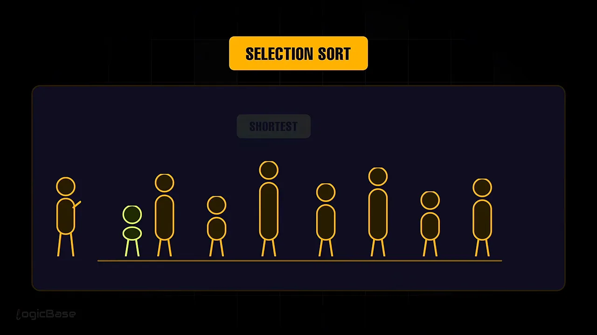
삽입 정렬은 카드 게임에서 손패를 정리하는 방식이에요. 아래 화면처럼 왼손에 2, 5, 9가 정렬돼 있을 때 새로 받은 7을 9보다 작고 5보다 큰 자리, 즉 5와 9 사이에 끼워요. 데이터가 적으면 꽤 빨라요.
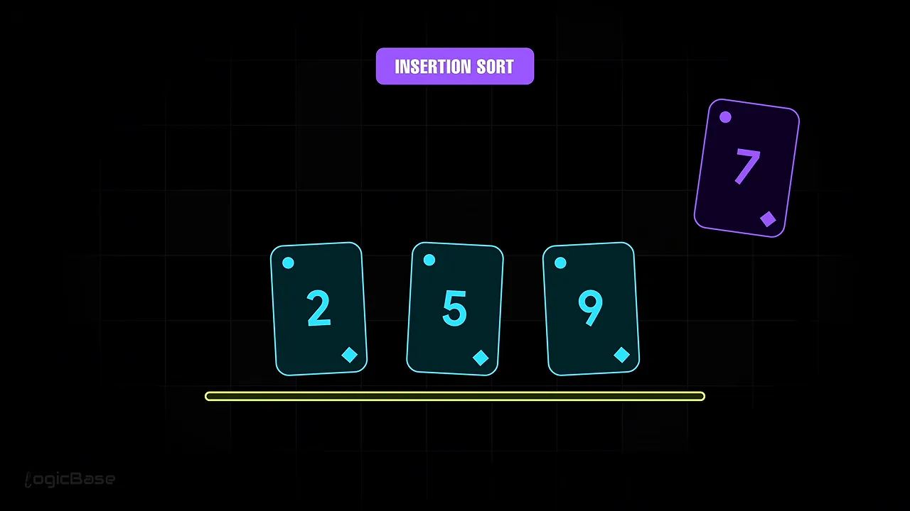
강사는 이 셋이 작은 일에는 괜찮지만 1,000만, 1억 개를 정렬하려 하면 완전히 실패한다고 말해요.
큰 데이터용: 병합 정렬과 퀵 정렬
병합 정렬은 큰 문제를 한 번에 풀지 않아요. 무작위 수 8개(38, 12, 27, 5, 44, 19, 31, 8)를 4개씩, 2개씩, 1개씩으로 쪼개요. 하나짜리는 그 자체로 정렬된 상태예요. 그다음 둘씩 비교해 짝을 맞춰 합치고(12·38, 5·27, 19·44, 8·31), 다시 넷씩 합쳐요. 아래 화면이 마지막으로 합쳐진 결과예요.
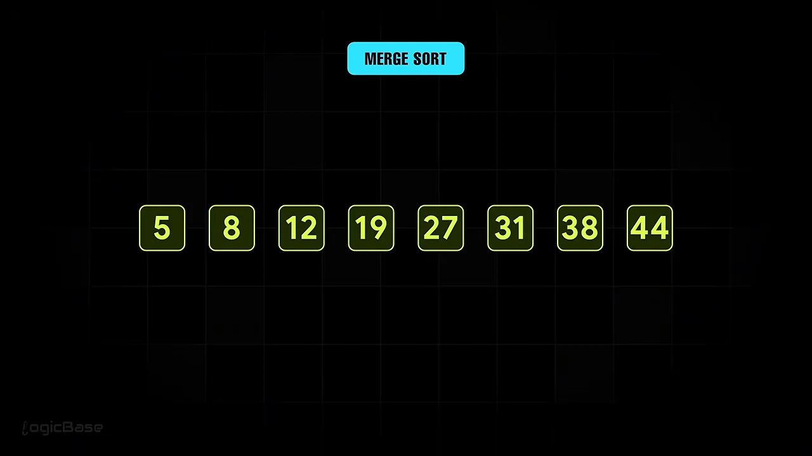
퀵 정렬은 먼저 리더(피벗) 하나를 골라요. 아래 화면에서는 50이 피벗이에요. 목록을 한 번 훑으면서 50보다 작은 수(18, 35, 11, 44)는 왼쪽으로, 큰 수(72, 64, 93)는 오른쪽으로 보내요. 그러면 50은 정확히 제자리에 앉아요. 이제 왼쪽 그룹과 오른쪽 그룹에서 각각 새 피벗을 골라 같은 일을 반복해요.
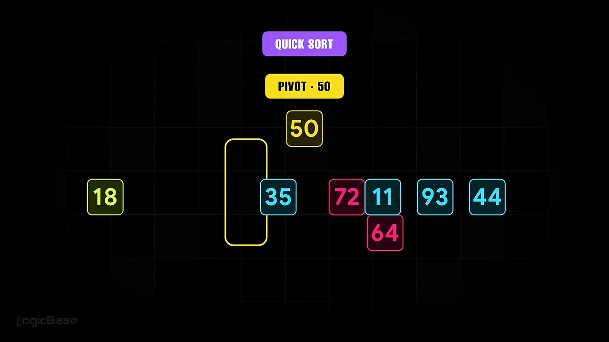
강사는 대부분의 프로그래밍 언어에서 정렬 함수를 부르면 퀵 정렬이나 병합 정렬이 뒤에서 일한다고 말해요.
재귀, 백트래킹, DFS와 BFS
재귀: 자기 자신을 부르는 함수
함수가 자기 문제를 풀려고 더 작은 같은 문제로 자기 자신을 부르는 게 재귀예요. 강사는 미용실의 마주 보는 두 거울을 예로 들어요. 앞 거울 속에 뒤 거울이, 그 속에 다시 앞 거울이 비치며 끝없이 작아져요. 아래 화면이 그 장면이에요. 양쪽 두 거울 사이에 사람이 서 있어요. OBS(Open Broadcaster Software)에서 데스크톱 화면을 장면으로 고를 때 생기는 무한 반복 화면, 열면 조금 더 작은 인형이 나오는 러시아 인형도 같은 예예요.
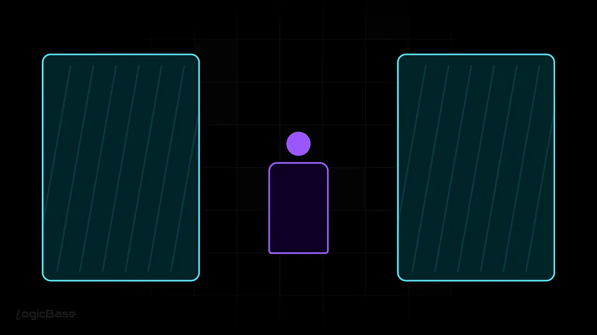
프로그래밍 예는 1부터 100까지의 합이에요. 나는 100을 따로 두고 동생에게 '1~99의 합을 가져와'라고 해요. 동생은 99를 두고 그 동생에게 1~98을 부탁해요. 아래 화면에서 100, 99를 맡은 형제 아래로 4950, 4851, … 3, 1이 이어지는 게 이 사슬이에요. 4950은 1~99의 합, 4851은 1~98의 합이에요.
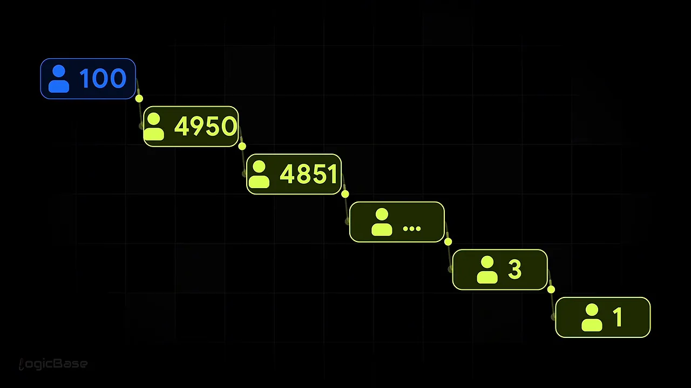
아래 그림은 이 사슬을 내려가는 길(호출)과 올라오는 길(답)로 나눠 그린 거예요. 막내는 손에 1 하나뿐이라 아무도 부르지 않고 '1의 합은 1'이라고 바로 답해요. 이 지점이 베이스 케이스예요. 거기서 1, 3, …, 4950을 거쳐 마지막에 5050이 내 손에 들어와요.
베이스 케이스를 빼먹으면 큰일 나요. 마주 보는 거울처럼 호출이 끝없이 이어지다가 메모리가 꽉 차서 스택 오버플로로 프로그램이 멈춰요. 강사는 트리의 가지 하나하나가 또 하나의 작은 트리라서, 병합 정렬과 퀵 정렬, 트리 문제를 재귀로 푸는 게 가장 깔끔하다고 말해요.
백트래킹: 막히면 되돌아가기
낯선 동네에서 길을 걷다 막다른 벽을 만나면 주저앉지 않고, 잘못 꺾은 곳까지 되돌아가 다른 길을 가요. 앞으로 가다 막히면 물러나 새 길을 찾는 이 방식이 백트래킹이에요. 재귀를 실전에 쓴 대표 사례예요.
스도쿠가 좋은 예예요. 컴퓨터는 첫 빈칸에 1을 넣고, 규칙이 안 깨지면 다음 칸으로 가요. 아래 화면 오른쪽의 23·24·25 칸을 보세요. 25번째 칸에는 1~9 무엇을 넣어도 규칙이 깨져서 X가 쳐졌어요. 그러면 24번째 칸(노란 테두리)으로 돌아가 잘못 넣은 숫자를 지우고 다른 숫자를 넣어요. 그래도 안 되면 23번째로 한 걸음 더 물러나요.
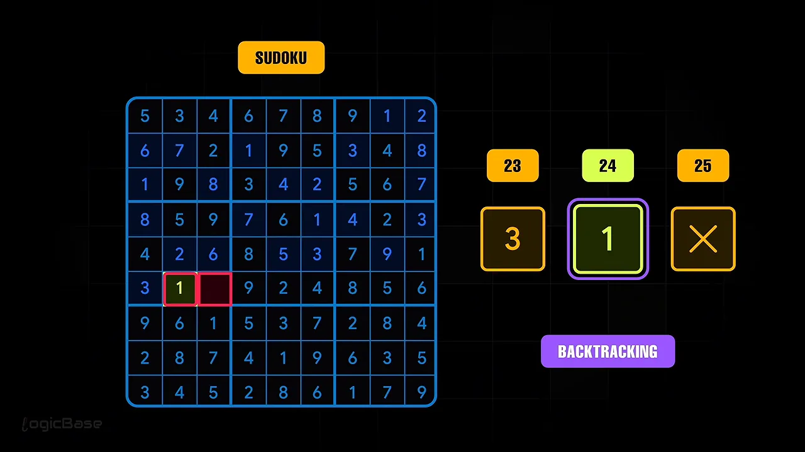
강사는 체스 AI(Artificial Intelligence)도 10~15수 앞을 이런 식으로 따져 보고, 위험이 보이면 물러나 최선의 수를 고른다고 말해요.
그래프를 훑는 두 방법: DFS와 BFS
거미줄 같은 그래프나 트리를 눈 감고 걸으면 같은 곳을 맴돌아요. 길을 잃지 않고 질서 있게 훑는 방법이 둘 있어요.
DFS(깊이 우선 탐색)의 원칙은 '앞에 길이 있으면 뒤돌아보지 말고 끝까지 들어가라'예요. 어두운 미로에서 왼쪽 길을 골랐으면 막다른 벽에 닿을 때까지 계속 가요. 막히면 직전 갈림길로 되돌아와(백트래킹) 아직 안 가 본 길로 다시 깊이 들어가요. 아래 화면에서 사람이 한 줄로 이어진 칸을 따라 끝까지 내려가는 게 그 모습이에요. 지나온 갈림길을 기억해 둬야 해서 스택이나 재귀를 써요.
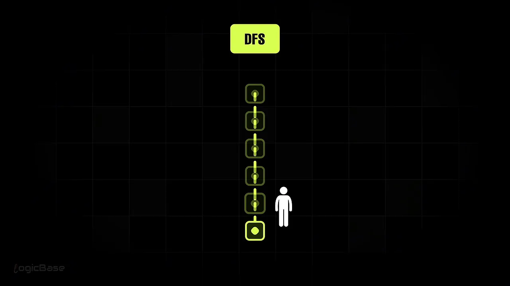
BFS(너비 우선 탐색)는 '멀리 뛰기 전에 가까운 곳부터 잘 보라'예요. 잔잔한 연못에 돌을 던지면 물결이 작은 원에서 시작해 점점 커져요. 아래 화면의 가운데 주황 점에서 동심원이 퍼지는 모습이 그거예요. 페이스북에서 내 프로필부터 시작하면, 먼저 직접 친구(1단계)를 모두 본 뒤 친구의 친구(2단계)로 넘어가요. 가까운 순서를 지키려고 큐를 써요. 강사는 페이스북과 링크드인의 '알 수도 있는 사람' 추천이 BFS라고 말해요.
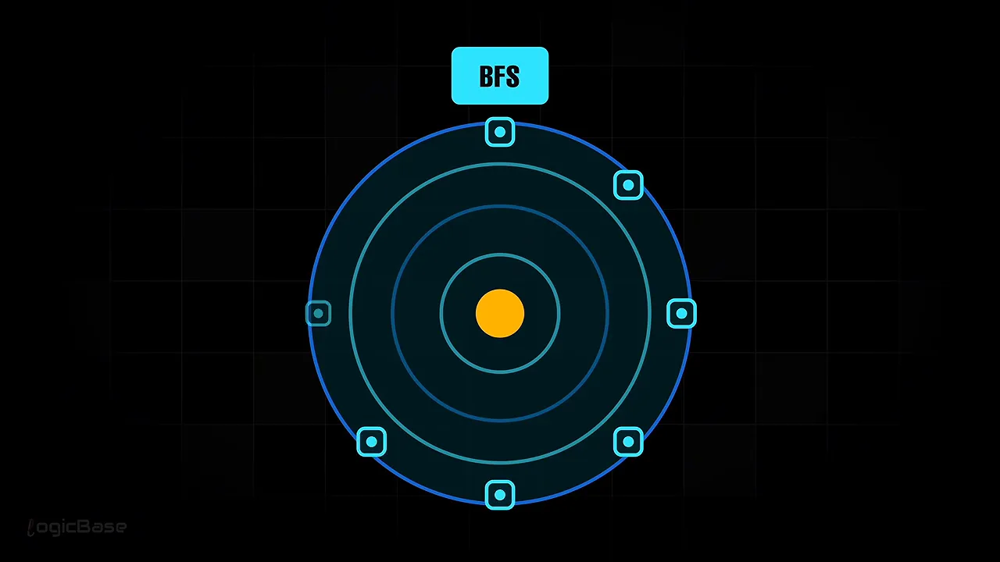
| DFS | BFS | |
|---|---|---|
| 걷는 방식 | 한 길을 끝까지 판 뒤 되돌아와요 | 가까운 곳부터 한 겹씩 넓혀요 |
| 영상의 비유 | 어두운 미로 | 연못의 물결 |
| 기억 장치 | 스택 또는 재귀 | 큐 |
| 영상의 쓰임새 | 미로처럼 끝까지 가 봐야 아는 탐색 | 친구 추천(알 수도 있는 사람) |
다익스트라, 그리고 알고리즘을 만드는 네 가지 생각법
다익스트라 알고리즘: 가장 싼 길 찾기
집을 나서면 목표는 하나예요. 가장 짧은 시간과 가장 적은 비용으로 도착하기요. 가중 그래프에서 이런 최단 경로를 찾는 대표 방법이 다익스트라 알고리즘이에요. 강사는 네덜란드 컴퓨터 과학자 에츠허르 다익스트라가 커피를 마시다 이 알고리즘을 떠올렸다는 일화도 곁들여요. 아래 화면 왼쪽의 사람과 커피잔이 그 장면이에요.
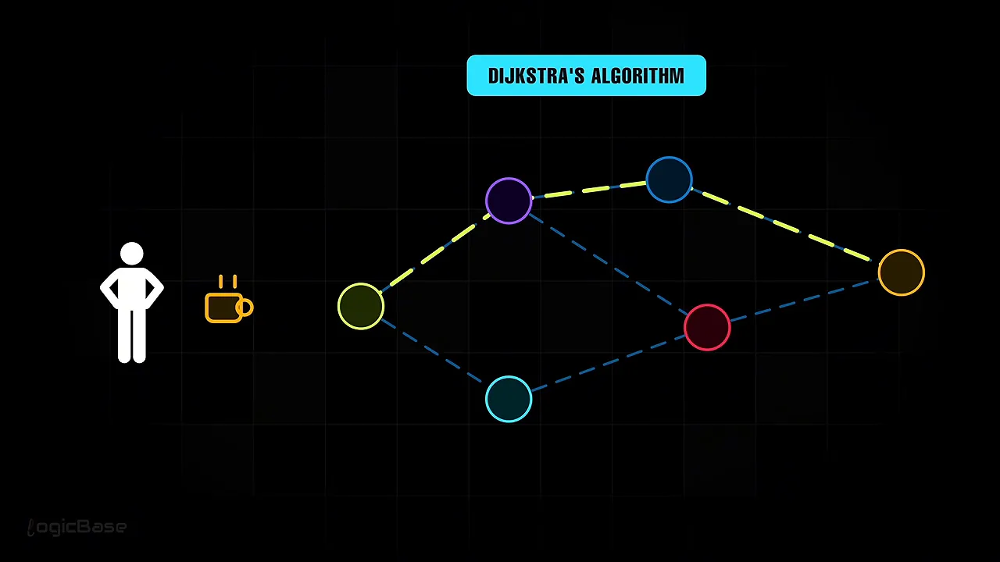
전략은 '먼 미래는 잊고, 지금 손에 닿는 가장 싼 교차로부터 고른다'예요. 다카에서 치타공까지 가는 예로 따라가 볼게요.
- 출발점만 0, 나머지는 무한대로 둬요 — 다카에서 다카까지는 0이에요. 쿠밀라, 페니, 치타공은 아직 모르니 아주 멀다고(무한대) 적어요.
- 출발점에서 바로 가는 길을 적어요 — 나라양간지까지 20km, 쿠밀라까지 직행 100km예요.
- 지금 가장 싼 곳으로 옮겨요 — 20km인 나라양간지로 가서, 거기서 갈 수 있는 길을 봐요.
- 더 싼 길이 보이면 고쳐 적어요 — 나라양간지에서 쿠밀라로 가는 우회로가 50km예요. 20 + 50 = 70km라서 기존 100km를 지우고 70을 적어요. 이렇게 더 싼 값으로 고쳐 적는 동작을 완화라고 불러요
- 치타공에 닿을 때까지 반복해요 — 교차로마다 가장 싼 곳을 고르다 보면 치타공까지 가장 싼 길이 완성돼요.
아래 화면이 4단계 장면이에요. 0에서 출발해 20(나라양간지)에 선 사람이, 20 + 50 경로를 보고 쿠밀라의 100을 고쳐 쓰려는 순간이에요. 위의 'RELAXATION' 라벨이 그 동작의 이름이에요.
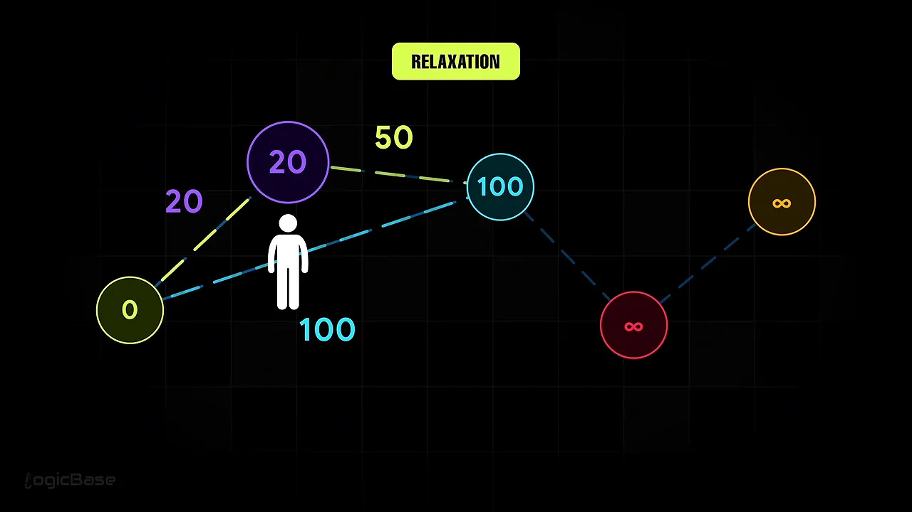
매번 '지금 가장 싼 교차로'를 빨리 고르는 엔진이 앞에서 본 최소 힙, 즉 우선순위 큐예요. 구글 지도나 우버에서 파란 경로선이 뜰 때 그 뒤에서 다익스트라와 우선순위 큐가 일한다고 강사는 말해요.
알고리즘을 만드는 네 가지 생각법
강사는 세상의 수많은 알고리즘이 결국 네 가지 생각법 위에 서 있다고 말해요. 이걸 잡으면 새 알고리즘도 이해하고 직접 만들 수 있다고요.
1. 탐욕(greedy). 먼 미래는 걱정하지 말고 지금 눈앞에서 가장 좋아 보이는 걸 고르는 방식이에요. 68타카짜리 물건을 사고 100타카를 내면 가게 주인은 32타카를 거슬러 줘야 해요. 아래 화면처럼 50은 32보다 커서 못 주니 건너뛰고, 들어가는 가장 큰 20을 줘요. 남은 12에는 10을, 남은 2에는 2를 줘요. 세 장으로 끝나요.
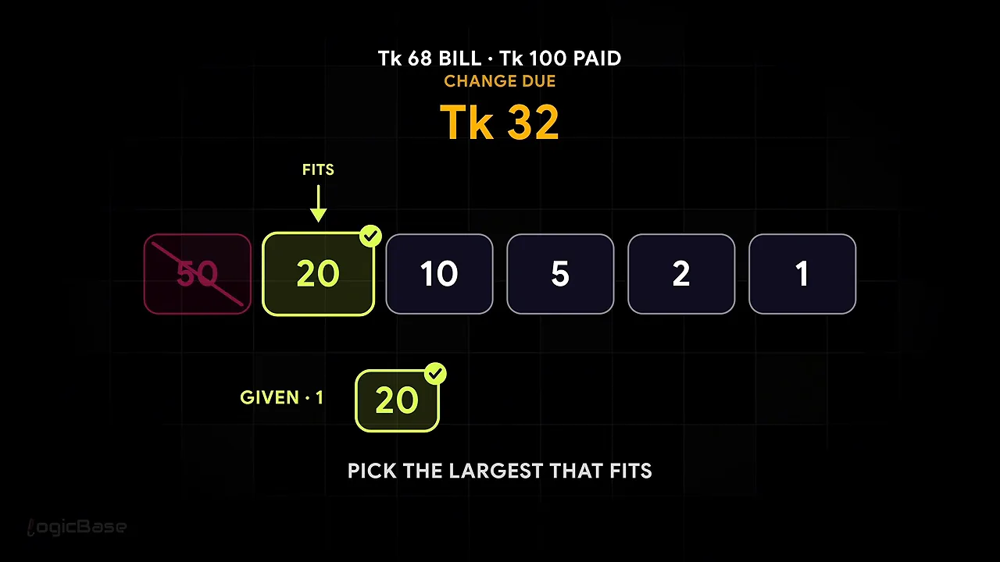
다익스트라도 이 방식이에요. 하지만 탐욕이 언제나 최선은 아니에요. 화면은 반례를 하나 보여 줘요. 아래 그림에서 꼭대기부터 아래로 내려가는 비용을 보면, 왼쪽 길은 첫 걸음이 2로 싸지만 다음이 9라서 합계 11이에요. 오른쪽 길은 첫 걸음이 5로 비싸 보여도 다음이 1이라 합계 6이에요. 당장 싼 쪽을 고르면 손해를 봐요. (강사는 말로는 '좋은 강의는 비싼데 늘 싼 것만 고르는 경우'를 예로 들어요.)
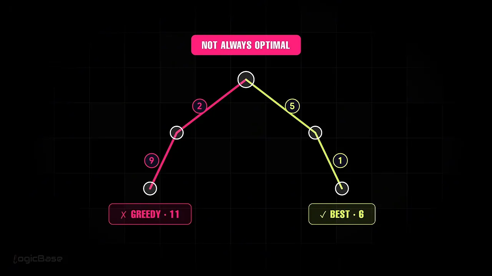
2. 분할 정복. 고대 로마가 거대한 적과 정면으로 싸우는 대신 작은 무리로 갈라 하나씩 이겼다는 비유로 설명해요. 컴퓨터에서는 세 단계예요. 큰 문제를 작은 문제로 쪼개고, 작은 문제를 (보통 재귀로) 풀고, 답을 합쳐요. 아래 화면은 병합 정렬이에요. 맨 아래 5, 2, 8, 1, 9, 3, 7, 4 하나하나가 둘씩(2·5, 1·8, 3·9, 4·7), 넷씩(1·2·5·8, 3·4·7·9) 합쳐 올라가요.
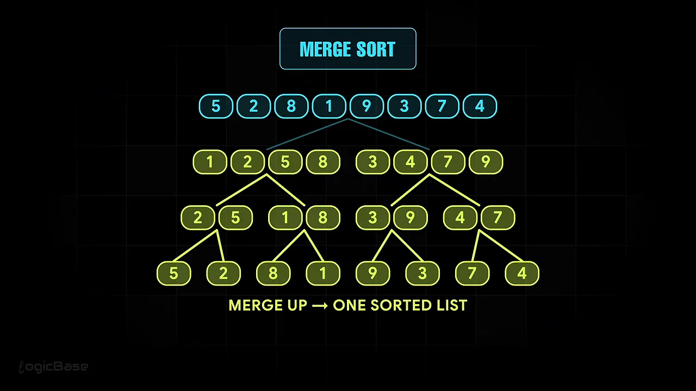
3. 동적 계획법(DP(Dynamic Programming)). 한 번 고생해서 낸 계산 결과를 적어 두고, 같은 계산이 또 나오면 처음부터 하지 않고 꺼내 쓰는 방식이에요. 칠판의 1+1+1+1+1을 세서 5라고 답했다면, 오른쪽에 +1이 붙어도 다시 세지 않고 바로 6이라고 해요. 아래 화면에서 왼쪽 계산 결과 5가 가운데 'MEMORY' 칸에 저장되고, 오른쪽에서 같은 계산이 나오자 바로 꺼내 써요. 이렇게 결과를 기억해 두는 걸 메모이제이션이라고 해요.
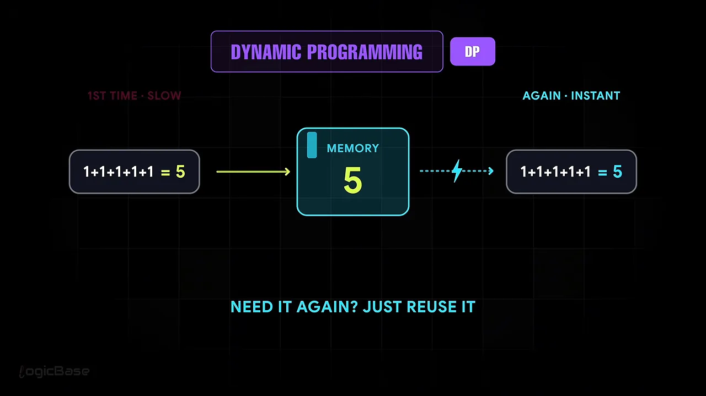
피보나치 수열은 각 수가 바로 앞 두 수의 합이에요. 50번째 수를 단순 재귀로 구하면 같은 작은 계산을 수십억 번 되풀이해서 몇 시간, 며칠이 걸릴 수 있어요. 결과를 적어 두게 하면 1초면 끝나요. 같은 작은 문제가 되풀이되는 게 보이면 동적 계획법을 쓸 때라고 정리해요.
4. 백트래킹. 앞 장에서 본 그 방식이에요. 갈 수 있는 길이 많아서 다 시도해 봐야 하고, 막히면 물러나 새 길을 가야 할 때 가장 좋은 도구예요. 스도쿠와 미로가 대표예요.
| 생각법 | 한 줄 요약 | 영상의 예 |
|---|---|---|
| 탐욕 | 지금 가장 좋아 보이는 걸 골라요 | 거스름돈, 다익스트라 |
| 분할 정복 | 쪼개고, 풀고, 합쳐요 | 병합 정렬, 퀵 정렬, 이진 탐색 |
| 동적 계획법 | 푼 결과를 적어 두고 다시 써요 | 1+1+…, 피보나치 |
| 백트래킹 | 막히면 물러나 다른 길을 가요 | 스도쿠, 미로 |
모두 문제에서 태어났어요
마무리로 강사는 오늘 본 개념 중 하늘에서 떨어진 건 하나도 없다고 말해요. 아래 화면이 그 계보예요. 배열의 중간 삽입이 힘들어서 연결 리스트가, 들어오고 나가는 순서를 다뤄야 해서 스택과 큐가, 순식간에 찾아야 해서 해시 테이블과 이진 탐색 트리가, 현실의 복잡한 관계망을 담아야 해서 그래프가 나왔어요.
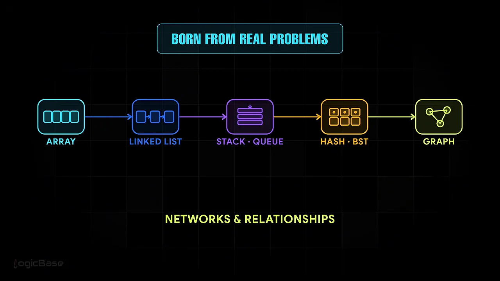
이제 원하는 언어를 골라 오늘 본 개념을 직접 코드로 짜 보라고 권하며 끝나요. 직접 짜 보면 코드 한 줄 한 줄 뒤에서 메모리가 어떻게 움직이는지 느낄 수 있다는 거예요.